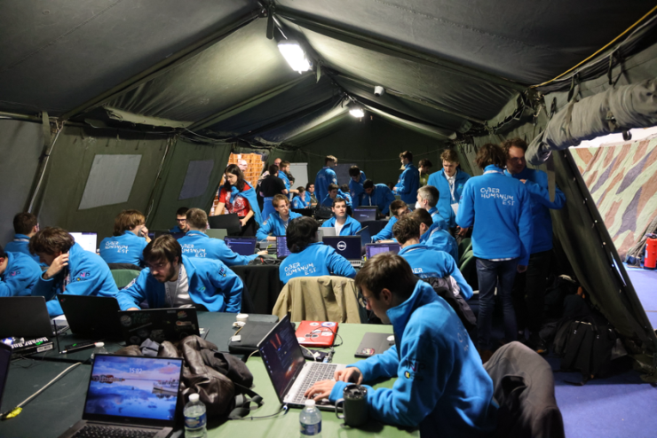
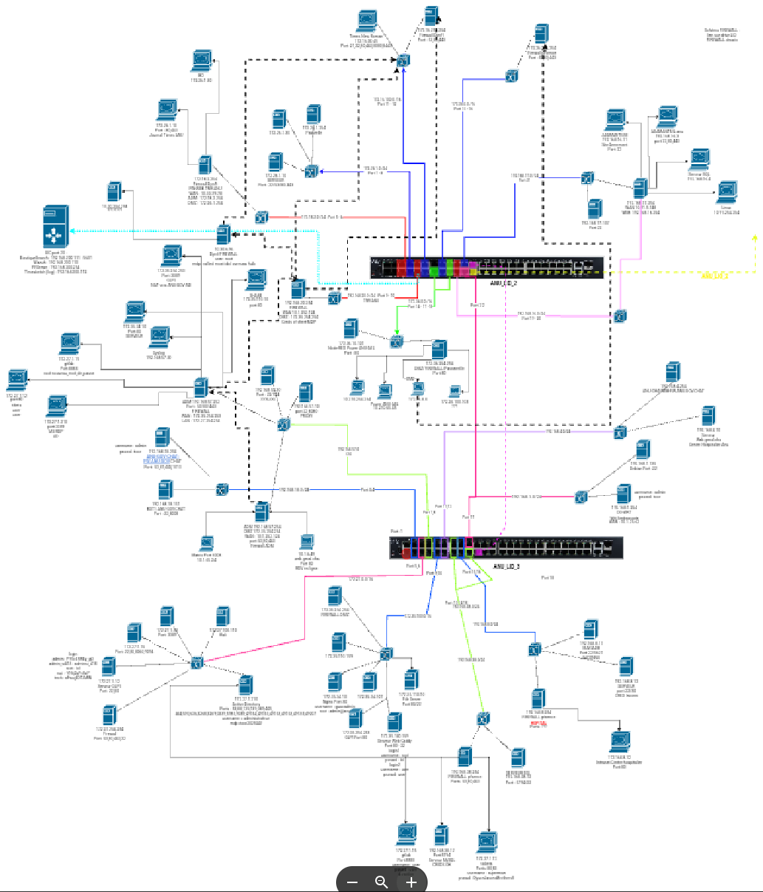
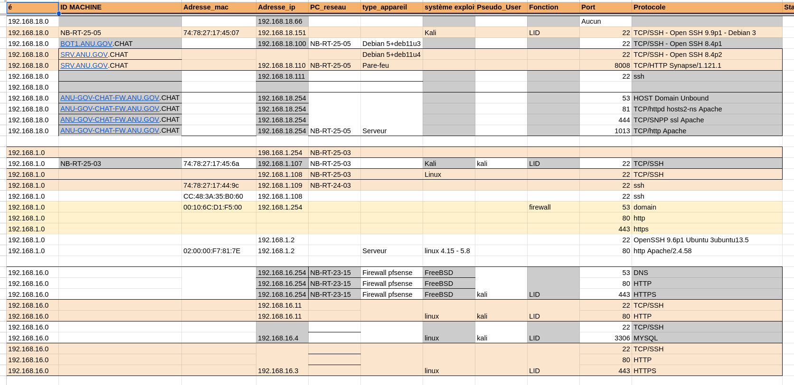
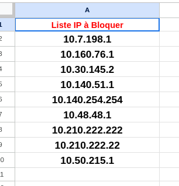

🛡️ - Positionnement et organisation
Le positionnement dans la tente était primordial, la défense devant absolument être sur un switch permettant de donner des adresses IP appartenant à notre réseau pour le cartographier.

Les deux premières tables sont pour l'Attaque, les deux suivantes sont pour la Défense et une au fond pour l'Influence.
Une table derrière le photographe est réservée pour les capitaines et lieutenants.
0 - Communication et stratégie
Une coordination stricte était nécessaire. Les capitaines validaient chaque action et s'assuraient de l'avancement de la cartographie et de savoir quelles infrastructures on pouvait protéger. Nous utilisions un canal Discord pour synchroniser les infrastructures trouvées et un tableau Excel pour répertorier toutes les adresses IP scannées et les serveurs, applications ou pare-feu présents dessus.

Ⅰ - Cartographie du réseau
Nous avons utilisé les commandes nmap et masscan pour analyser nos infrastructures et trouver toutes les informations susceptibles d'être vulnérables.

Chaque adresse IP a été documentée, chaque interface trouvée a été associée à chaque adresse IP et chaque port du switch, qui répartissait les adresses IP de notre réseau sur chaque ordinateur, a été associé à chaque IP.

Ⅱ - Surveillance du réseau
Nous avons utilisé Wireshark pour analyser le trafic réseau et détecter les attaques adverses.
Chaque alerte repérée était communiquée pour que nous puissions mettre en place les règles de filtrage et ainsi bloquer les intrusions.
Grâce à ces mises en place, nous avons pu repousser plusieurs tentatives d'intrusion.
Ⅲ - Réaction aux attaques
En cas d'attaque, nous avons rapidement isolé les machines compromises et bloqué les adresses IP suspectes.

Un suivi en temps réel nous a permis de minimiser les impacts et de préserver nos systèmes.
Ⅳ - Évolution de la défense
Vers le milieu de l'exercice, il nous a été fourni un GIC (Groupement d'Intervention Cyber) contenant des outils qui nous permettaient de déployer des agents sur nos serveurs, nos machines, qui centralisaient les logs, les pare-feu, et nous permettaient une bien meilleure protection contre les attaques.